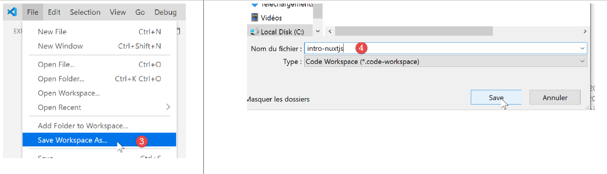
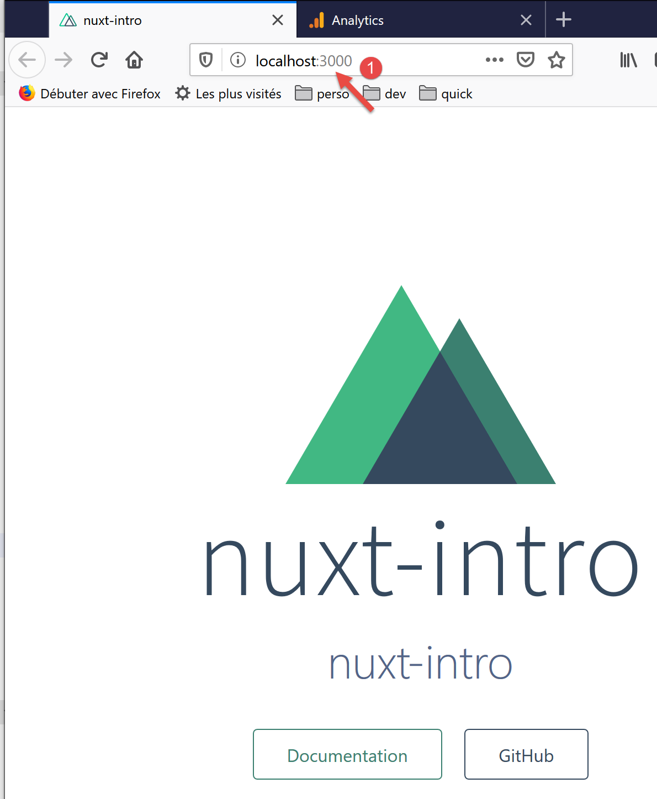
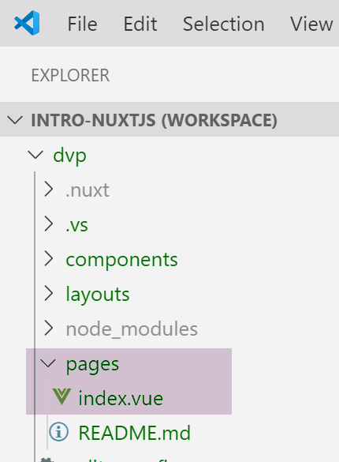
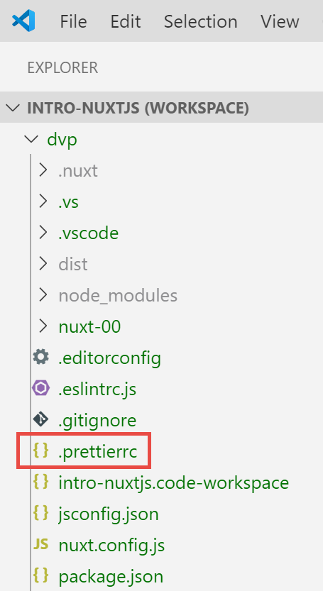
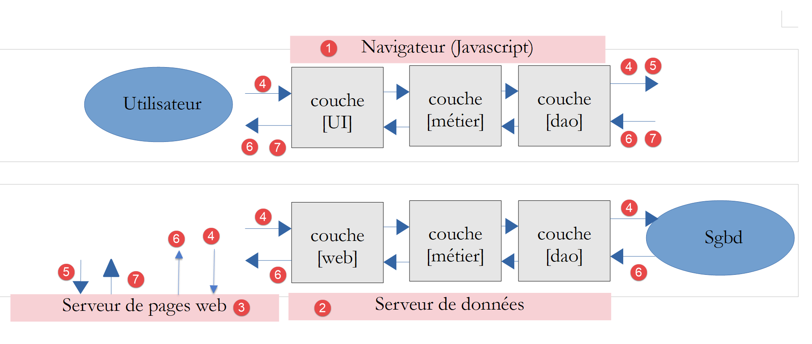
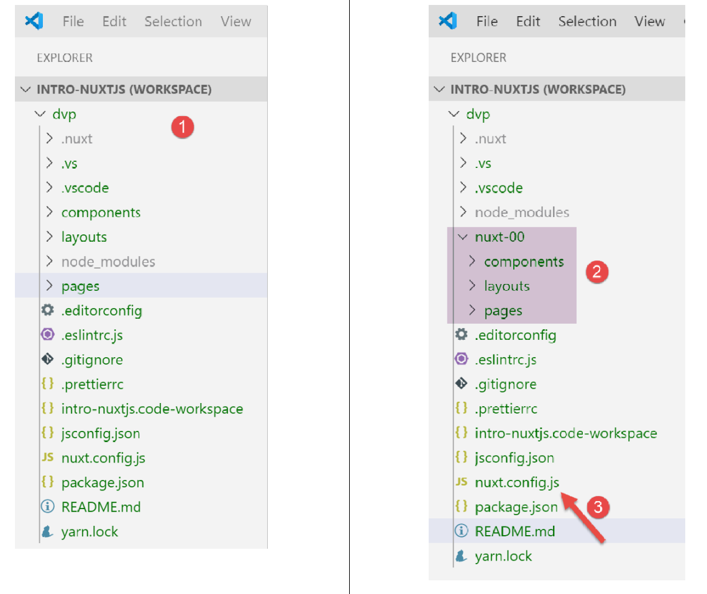
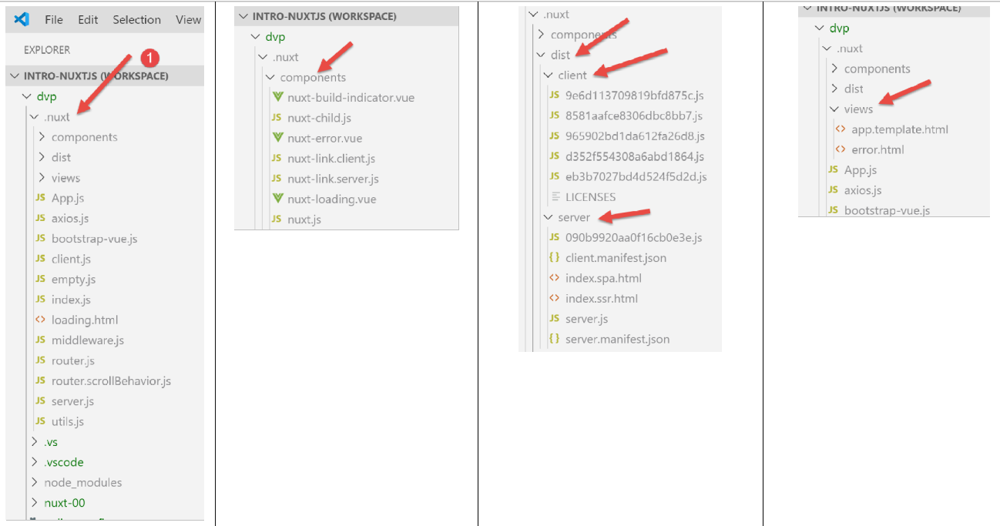
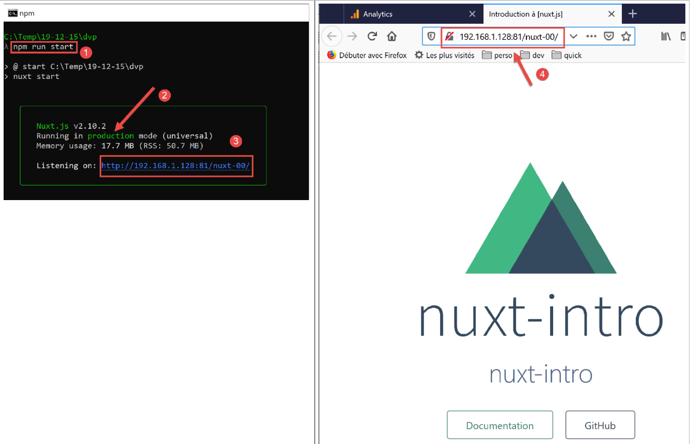
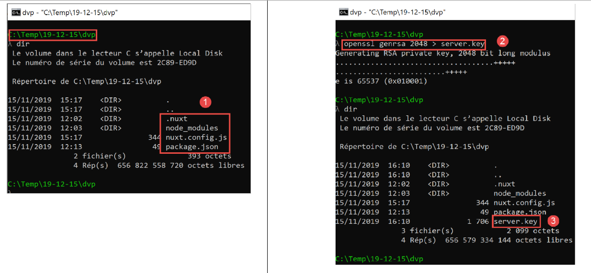
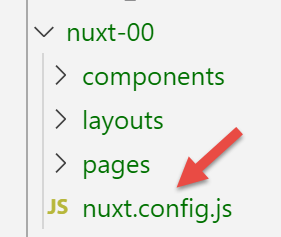

3. Una primera aplicación [nuxt.js]
3.1. Creación de la aplicación
Para nuestros desarrollos [nuxt.js] seguimos utilizando VS Code. Hemos creado una carpeta [dvp] vacía en la que vamos a guardar nuestros ejemplos. A continuación, abrimos esta carpeta:

Guardamos el espacio de trabajo con el nombre [intro-nuxtjs] [3-5]:

Abrimos un terminal [6-7]:

Hasta ahora, hemos utilizado el gestor de paquetes de JavaScript [npm]. Para variar, aquí vamos a utilizar el gestor [yarn]. Este se instala, al igual que [npm], con las versiones recientes de [node.js]. Para crear una primera aplicación [nuxt], utilizamos el comando [yarn create nuxt-app <dossier>] [1]. El comando solicitará cierta información sobre el proyecto que se va a generar y, una vez obtenida, lo generará [2]:

En [2] se ha creado toda una estructura de archivos. El archivo [package.json] muestra la lista de bibliotecas de JavaScript descargadas en la carpeta [node-modules] [4]:
{
"name": "nuxt-intro",
"version": "1.0.0",
"description": "nuxt-intro",
"author": "serge-tahe",
"private": true,
"scripts": {
"dev": "nuxt",
"build": "nuxt build",
"start": "nuxt start",
"generate": "nuxt generate",
"lint": "eslint --ext .js,.vue --ignore-path .gitignore ."
},
"dependencies": {
"nuxt": "^2.0.0",
"bootstrap-vue": "^2.0.0",
"bootstrap": "^4.1.3",
"@nuxtjs/axios": "^5.3.6"
},
"devDependencies": {
"@nuxtjs/eslint-config": "^1.0.1",
"@nuxtjs/eslint-module": "^1.0.0",
"babel-eslint": "^10.0.1",
"eslint": "^6.1.0",
"eslint-plugin-nuxt": ">=0.4.2",
"eslint-config-prettier": "^4.1.0",
"eslint-plugin-prettier": "^3.0.1",
"prettier": "^1.16.4"
}
}
Este archivo refleja las respuestas dadas al comando [create nuxt-app] para definir el proyecto creado (noviembre de 2019). El lector puede tener un archivo [package.json] diferente:
- puede que haya dado respuestas diferentes a las preguntas;
- el comando [create nuxt-app] habrá evolucionado desde que se redactó este documento: las dependencias y las versiones habrán cambiado;
La línea 8 del script es el comando que inicia la aplicación:

- en [4], se ve que la aplicación está disponible en URL y [localhost:3000];
- en [5-6], vemos que la aplicación da lugar a un servidor [6] y a un cliente (de ese servidor) [5];
Accedamos a URL [http://localhost:3000/] en un navegador:

3.2. Descripción de la estructura de árbol de una aplicación [nuxt]
Volvamos a la estructura de la aplicación creada:

La función de las carpetas es la siguiente:
assets | recursos no compilados de la aplicación (imágenes, etc.); |
static | los archivos de esta carpeta estarán disponibles en la raíz de la aplicación. En esta carpeta se colocan los archivos que deben encontrarse en la raíz de la aplicación, como por ejemplo el archivo [robots.txt] destinado a los motores de búsqueda; |
components | los componentes [vue] de la aplicación utilizados en los [layouts] y los [pages]; |
diseños | los componentes [vue] de la aplicación que sirven como maquetación de los [pages]; |
páginas | los componentes [vue] que se muestran en las diferentes rutas de la aplicación. Se podrían denominar «vistas» de la aplicación. Las páginas desempeñan un papel especial en [nuxt]: las rutas se crean dinámicamente a partir del árbol de carpetas que se encuentra en la carpeta [pages]; |
middleware | los scripts que se ejecutan cada vez que se cambia de ruta. Permiten controlar dichas rutas; |
los plugins | tiene un nombre que puede llevar a confusión. Puede contener plugins, pero también scripts clásicos. Los scripts que se encuentran en esta carpeta se ejecutan al iniciar la aplicación; |
almacén | si contiene un script [index.js], este define una instancia del almacén de [Vuex]; |
Si una carpeta está vacía, se puede eliminar del árbol de directorios. En el ejemplo anterior, se pueden eliminar las carpetas [assets, static, middleware, plugins, store] y [2].
3.3. El archivo de configuración [nuxt.config]
La ejecución de la aplicación se controla mediante el siguiente archivo [nuxt.config.js]:
export default {
mode: 'universal',
/*
** Headers of the page
*/
head: {
title: process.env.npm_package_name || '',
meta: [
{ charset: 'utf-8' },
{ name: 'viewport', content: 'width=device-width, initial-scale=1' },
{
hid: 'description',
name: 'description',
content: process.env.npm_package_description || ''
}
],
link: [{ rel: 'icon', type: 'image/x-icon', href: '/favicon.ico' }]
},
/*
** Customize the progress-bar color
*/
loading: { color: '#fff' },
/*
** Global CSS
*/
css: [],
/*
** Plugins to load before mounting the App
*/
plugins: [],
/*
** Nuxt.js dev-modules
*/
buildModules: [
// Doc: https://github.com/nuxt-community/eslint-module
'@nuxtjs/eslint-module'
],
/*
** Nuxt.js modules
*/
modules: [
// Doc: https://bootstrap-vue.js.org
'bootstrap-vue/nuxt',
// Doc: https://axios.nuxtjs.org/usage
'@nuxtjs/axios'
],
/*
** Axios module configuration
** See https://axios.nuxtjs.org/options
*/
axios: {},
/*
** Build configuration
*/
build: {
/*
** You can extend webpack config here
*/
extend(config, ctx) {}
}
}
- línea 2: el tipo de aplicación generada:
- [universal]: aplicación cliente/servidor. Al cargarse la aplicación por primera vez, así como cada vez que se actualiza la página en el navegador, se solicita al servidor que envíe la página;
- [sap]: aplicación de tipo [Single Page Application]: un servidor entrega inicialmente la totalidad de la aplicación. A continuación, el cliente opera de forma autónoma, incluso en caso de actualización de una página en el navegador;
- líneas 6-18: definen el encabezado HTML <head> de las diferentes páginas de la aplicación:
- línea 7: la etiqueta <title> del título de las páginas;
- líneas 8-16: las etiquetas <meta>;
- línea 17: las etiquetas <link>
En la aplicación generada, la etiqueta <head> es la siguiente (código fuente de la página mostrada en el navegador):
<title>nuxt-intro</title>
<meta data-n-head="ssr" charset="utf-8">
<meta data-n-head="ssr" name="viewport" content="width=device-width, initial-scale=1">
<meta data-n-head="ssr" data-hid="description" name="description" content="nuxt-intro">
<link data-n-head="ssr" rel="icon" type="image/x-icon" href="/favicon.ico">
<link rel="preload" href="/_nuxt/runtime.js" as="script">
<link rel="preload" href="/_nuxt/commons.app.js" as="script">
<link rel="preload" href="/_nuxt/vendors.app.js" as="script">
<link rel="preload" href="/_nuxt/app.js" as="script">
Ahora, modifiquemos el archivo [nuxt.config] de la siguiente manera:
head: {
title: 'Introduction à [nuxt.js]',
meta: [
{ charset: 'utf-8' },
{ name: 'viewport', content: 'width=device-width, initial-scale=1' },
{
hid: 'description',
name: 'description',
content: 'ssr routing loading asyncdata middleware plugins store'
}
],
link: [{ rel: 'icon', type: 'image/x-icon', href: '/favicon.ico' }]
},
Al volver a ejecutar la aplicación, la etiqueta <head> ha pasado a ser la siguiente (código fuente de la página mostrada en el navegador):
<head >
<title>Introduction à [nuxt.js]</title>
<meta data-n-head="ssr" charset="utf-8">
<meta data-n-head="ssr" name="viewport" content="width=device-width, initial-scale=1">
<meta data-n-head="ssr" data-hid="description" name="description" content="ssr routing loading asyncdata middleware plugins store">
<link data-n-head="ssr" rel="icon" type="image/x-icon" href="/favicon.ico">
<link rel="preload" href="/_nuxt/runtime.js" as="script">
<link rel="preload" href="/_nuxt/commons.app.js" as="script">
<link rel="preload" href="/_nuxt/vendors.app.js" as="script">
<link rel="preload" href="/_nuxt/app.js" as="script">
Volvamos al archivo [nuxt.config]:
export default {
mode: 'universal',
/*
** Headers of the page
*/
head: {
...
},
/*
** Customize the progress-bar color
*/
loading: { color: '#fff' },
/*
** Global CSS
*/
css: [],
/*
** Plugins to load before mounting the App
*/
plugins: [],
/*
** Nuxt.js dev-modules
*/
buildModules: [
// Doc: https://github.com/nuxt-community/eslint-module
'@nuxtjs/eslint-module'
],
/*
** Nuxt.js modules
*/
modules: [
// Doc: https://bootstrap-vue.js.org
'bootstrap-vue/nuxt',
// Doc: https://axios.nuxtjs.org/usage
'@nuxtjs/axios'
],
/*
** Axios module configuration
** See https://axios.nuxtjs.org/options
*/
axios: {},
/*
** Build configuration
*/
build: {
/*
** You can extend webpack config here
*/
extend(config, ctx) {}
}
}
- línea 12: entre cada ruta del cliente [nuxt], aparece una barra de carga (loading) si el cambio de ruta tarda un poco. La propiedad [loading] permite configurar esta barra de carga; en este caso, el color de la barra;
- línea 16: los archivos globales [css]. Se incluirán automáticamente en todas las páginas de la aplicación;
- líneas 24-27: los módulos de JavaScript necesarios para la compilación (build) de la aplicación;
- líneas 31-36: los módulos de JavaScript utilizados por la aplicación;
- línea 41: configuración de la biblioteca [axios] cuando el usuario la ha seleccionado para los diálogos HTTP con servidores de terceros;
- líneas 45-50: configuración de la compilación (build) del proyecto;
Se pueden añadir otras claves al archivo de configuración. En particular, se puede configurar el puerto del servicio (3000 por defecto) y la raíz del proyecto (por defecto, la carpeta raíz del proyecto). Eso es lo que vamos a hacer ahora añadiendo las siguientes claves:
// directorio del código fuente
srcDir: '.',
router: {
// URL raíz de las páginas de la aplicación
base: '/nuxt-intro/'
},
// servidor
server: {
// puerto del servicio —por defecto 3000
port: 81,
// direcciones de red en las que se escucha: por defecto, localhost=127.0.0.1
host: '0.0.0.0'
}
- línea 2: dónde se encuentra el código fuente del proyecto. Se encuentra aquí, en la carpeta actual, es decir, en el mismo nivel que el archivo [nuxt.config.js]. Este es el valor por defecto;
- líneas 8-13: configuran el servidor (no hay que olvidar que una aplicación [nuxt] del tipo [universal] está instalada tanto en un servidor como en un navegador cliente de dicho servidor);
- línea 10: las páginas de la aplicación se servirán en el puerto 81 del servidor;
- línea 12: por defecto, [localhost] (dirección de red 127.0.0.1). Un equipo puede tener varias direcciones de red si pertenece a varias redes. La dirección 0.0.0.0 indica que el servidor web escucha todas las direcciones de red del equipo;
- líneas 3-6: configuran el enrutador de la aplicación [nuxt];
- línea 5: las páginas de la aplicación estarán disponibles en URL y [http://localhost:81/nuxt-intro/];
Añadamos estas líneas al archivo [nuxt.config.js] y, a continuación, ejecutemos el proyecto (script npm dev). El resultado es el siguiente:

- en [1], la dirección del equipo en una red pública;
- en [2], el puerto del servicio;
- en [3], la raíz de la aplicación;
3.4. La carpeta [layouts]

La carpeta [layouts] está destinada a los componentes de maquetación. Por defecto, se utiliza el componente denominado [default.vue]. En este proyecto, este es el siguiente:
<template>
<div>
<nuxt />
</div>
</template>
<style>
html {
font-family: 'Source Sans Pro', -apple-system, BlinkMacSystemFont, 'Segoe UI',
Roboto, 'Helvetica Neue', Arial, sans-serif;
font-size: 16px;
word-spacing: 1px;
-ms-text-size-adjust: 100%;
-webkit-text-size-adjust: 100%;
-moz-osx-font-smoothing: grayscale;
-webkit-font-smoothing: antialiased;
box-sizing: border-box;
}
*,
*:before,
*:after {
box-sizing: border-box;
margin: 0;
}
.button--green {
display: inline-block;
border-radius: 4px;
border: 1px solid #3b8070;
color: #3b8070;
text-decoration: none;
padding: 10px 30px;
}
.button--green:hover {
color: #fff;
background-color: #3b8070;
}
.button--grey {
display: inline-block;
border-radius: 4px;
border: 1px solid #35495e;
color: #35495e;
text-decoration: none;
padding: 10px 30px;
margin-left: 15px;
}
.button--grey:hover {
color: #fff;
background-color: #35495e;
}
</style>
Comentarios
- líneas 1-5: el [template] del componente;
- línea 3: la etiqueta <nuxt /> designa la página actual del enrutamiento;
- líneas 7-55: el estilo incorporado por el componente de maquetación. Dado que este contiene la página actual de la ruta, dicho estilo se aplicará a todas las páginas enrutadas de la aplicación;
Se observa que el objetivo principal de la página [default.vue] es, en este caso, aplicar un estilo a las páginas enrutadas.
3.5. La carpeta [pages]

La carpeta [pages] contiene las vistas enrutadas, es decir, las que ve el usuario. La página [index.vue] es la página de inicio de la aplicación. En el caso de [nuxt.js], no hay ningún archivo de enrutamiento. Las rutas se determinan a partir de la estructura de la carpeta [pages]. En este caso, la presencia de un archivo [index.vue] creará automáticamente una ruta denominada [index] y una ruta de acceso [/index], que se reducirá a [/], ya que se trata de la página de inicio. De este modo, se crea la siguiente ruta:
El archivo [index.vue] es el siguiente:
<template>
<div class="container">
<div>
<logo />
<h1 class="title">
nuxt-intro
</h1>
<h2 class="subtitle">
nuxt-intro
</h2>
<div class="links">
<a href="https://nuxtjs.org/" target="_blank" class="button--green">
Documentation
</a>
<a
href="https://github.com/nuxt/nuxt.js"
target="_blank"
class="button--grey"
>
GitHub
</a>
</div>
</div>
</div>
</template>
<script>
import Logo from '~/components/Logo.vue'
export default {
components: {
Logo
}
}
</script>
<style>
.container {
margin: 0 auto;
min-height: 100vh;
display: flex;
justify-content: center;
align-items: center;
text-align: center;
}
.title {
font-family: 'Quicksand', 'Source Sans Pro', -apple-system, BlinkMacSystemFont,
'Segoe UI', Roboto, 'Helvetica Neue', Arial, sans-serif;
display: block;
font-weight: 300;
font-size: 100px;
color: #35495e;
letter-spacing: 1px;
}
.subtitle {
font-weight: 300;
font-size: 42px;
color: #526488;
word-spacing: 5px;
padding-bottom: 15px;
}
.links {
padding-top: 15px;
}
</style>
Las líneas 1-25 del archivo [template] muestran lo siguiente:
La imagen [1] se genera a partir de la línea 4 del archivo [template]. Por lo tanto, se observa que la página utiliza un componente denominado [logo]. Este se define en las líneas 27-35 del script de la página. En la línea 28, la notación [~] designa la raíz del proyecto.
3.6. El componente [Logo]

El componente [Logo.vue] es el siguiente:
<template>
<div class="VueToNuxtLogo">
<div class="Triangle Triangle--two" />
<div class="Triangle Triangle--one" />
<div class="Triangle Triangle--three" />
<div class="Triangle Triangle--four" />
</div>
</template>
<style>
.VueToNuxtLogo {
display: inline-block;
animation: turn 2s linear forwards 1s;
transform: rotateX(180deg);
position: relative;
overflow: hidden;
height: 180px;
width: 245px;
}
.Triangle {
position: absolute;
top: 0;
left: 0;
width: 0;
height: 0;
}
.Triangle--one {
border-left: 105px solid transparent;
border-right: 105px solid transparent;
border-bottom: 180px solid #41b883;
}
.Triangle--two {
top: 30px;
left: 35px;
animation: goright 0.5s linear forwards 3.5s;
border-left: 87.5px solid transparent;
border-right: 87.5px solid transparent;
border-bottom: 150px solid #3b8070;
}
.Triangle--three {
top: 60px;
left: 35px;
animation: goright 0.5s linear forwards 3.5s;
border-left: 70px solid transparent;
border-right: 70px solid transparent;
border-bottom: 120px solid #35495e;
}
.Triangle--four {
top: 120px;
left: 70px;
animation: godown 0.5s linear forwards 3s;
border-left: 35px solid transparent;
border-right: 35px solid transparent;
border-bottom: 60px solid #fff;
}
@keyframes turn {
100% {
transform: rotateX(0deg);
}
}
@keyframes godown {
100% {
top: 180px;
}
}
@keyframes goright {
100% {
left: 70px;
}
}
</style>
Este componente se compone principalmente de estilos y animaciones para crear una imagen animada.
3.7. Vista DevTools
[Vue DevTools] es la extensión del navegador que permite inspeccionar los objetos [nuxt.js] y [vue.js] en el navegador. Ya la hemos utilizado en el capítulo sobre [vue.js]. Veamos qué encuentra esta herramienta cuando se muestra la página de inicio de nuestra aplicación:

- en [1], el componente [PagesIndex] hace referencia a la página [pages/index.vue];
- en [2] vemos que este componente tiene una propiedad [$route], que es la ruta que ha llevado a la página [index];
A modo de ejercicio sencillo, mostremos esta ruta en la consola.
3.8. Modificación de la página de inicio
Vamos a modificar el archivo [index.vue]. En nuestra instalación del proyecto, hemos instalado dos dependencias:
- [eslint]: que comprueba la sintaxis de los archivos JavaScript y de los componentes de Vue. Si se ha instalado la extensión [ESLint] de VSCode, esta sintaxis se comprueba a medida que se escribe el texto y los errores se señalan inmediatamente;
- [prettier]: que formatea los códigos JavaScript de forma estándar;
Estas dependencias se registran en el archivo [package.json]:
"devDependencies": {
"@nuxtjs/eslint-config": "^1.0.1",
"@nuxtjs/eslint-module": "^1.0.0",
"babel-eslint": "^10.0.1",
"eslint": "^6.1.0",
"eslint-config-prettier": "^4.1.0",
"eslint-plugin-nuxt": ">=0.4.2",
"eslint-plugin-prettier": "^3.0.1",
"prettier": "^1.16.4"
}
He podido observar (noviembre de 2019) que, con la instalación realizada mediante el comando [yarn create nuxt-app], las herramientas [eslint, prettier] no funcionan al escribir el texto. Los errores solo se señalan durante la compilación. Tras investigar un poco, he encontrado una configuración que funciona:

Se instala en la raíz del proyecto una carpeta [.vscode] que contenga el siguiente archivo [settings.json]:
{
"eslint.validate": [
{
"language": "vue",
"autoFix": true
},
{
"language": "javascript",
"autoFix": true
}
],
"eslint.autoFixOnSave": true,
"editor.formatOnSave": false
}
- líneas 2-11: indican que, cuando [eslint] valida los archivos .vue y .js, debe corregir los errores que pueda corregir;
- línea 12: cuando se guarda un archivo, [eslint] debe corregir los errores que pueda corregir;
- línea 13: desactiva el formateo predeterminado de VSCode al guardar. Será [prettier] quien se encargue de ello;
Con esta configuración:
- los errores de sintaxis o de formato se señalan en cuanto se escribe el texto;
- los errores de formato se corrigen automáticamente al guardar el archivo;
La biblioteca [prettier] se configura mediante el archivo [.prettierrc]:

Este archivo es, por defecto, el siguiente:
{
"semi": false,
"arrowParens": "always",
"singleQuote": true
}
- línea 1: no hay punto y coma al final de las instrucciones;
- línea 2: si una función «flecha» (arrow) tiene un único parámetro, este va entre paréntesis;
- línea 3: las cadenas de caracteres van entre apóstrofos (no entre comillas);
Añadimos las dos reglas siguientes:
{
"semi": false,
"arrowParens": "always",
"singleQuote": true,
"printWidth": 120,
"endOfLine": "auto"
}
- línea 5: la línea de código puede tener hasta 120 caracteres;
- línea 6: el marcador de fin de línea puede ser indistintamente CRLF (Windows) o LF (Unix);
Por último, el archivo [package.json] se modifica de la siguiente manera:
"scripts": {
"dev": "nuxt",
"build": "nuxt build",
"start": "nuxt start",
"generate": "nuxt generate",
"lint": "eslint --ext .js,.vue --ignore-path .gitignore .",
"lintfix": "eslint --fix --ext .js,.vue --ignore-path .gitignore ."
},
- línea 7: añadimos el comando [lintfix], que es idéntico al comando [lint] de la línea 6, salvo que incluye además el parámetro [--fix]. El comando [lint] comprueba la sintaxis y el formato de todos los archivos del proyecto y señala cualquier error. [lintfix] hará lo mismo, salvo que los problemas de formato que se puedan corregir se corregirán automáticamente. [lintfix] será el comando que hay que utilizar si la compilación falla debido a problemas de formato de los archivos;
Una vez hecho esto, modificamos el archivo [index.vue] de la siguiente manera:

<script>
/* eslint-disable no-console */
import Logo from '~/components/Logo.vue'
export default {
components: {
Logo
},
// ciclo de vida
created() {
console.log('created, route=', this.$route)
}
}
</script>
- líneas 10-12: añadimos la función [created], que se ejecuta automáticamente una vez creado el componente;
- línea 11: se muestra la ruta actual;
- línea 2: un comentario destinado a [eslint]. Sin este comentario, [eslint] señala un error; línea 11: no admite instrucciones [console] en las funciones del ciclo de vida. [eslint] es configurable. Mantendremos su configuración por defecto y utilizaremos comentarios como el de la línea 2 para desactivar una regla concreta de [eslint]. Utilizaremos dos tipos de comentarios:
- /* desactivación de la regla [eslint] */: desactivación de una regla para todo el archivo;
- // desactivación de la regla [eslint]: desactivación de una regla para la línea siguiente;
Al escribir, se señalan los errores y hay disponible una función [Quick Fix]:

Se ejecuta el proyecto:

- en [1], la pestaña [Vue] de las herramientas de desarrollo del navegador (F12);
- en [2] y [3], la visualización de la ruta;
¿Por qué dos visualizaciones y no una sola?
Una aplicación [nuxt] se compone de dos elementos: un servidor y un cliente:
- el servidor proporciona las páginas de la aplicación al iniciarla y, posteriormente, cada vez que se actualiza una página en el navegador (F5) o cuando el usuario introduce manualmente una URL de la aplicación;
- cada página proporcionada por el navegador contiene la página solicitada, así como el código JavaScript de toda la aplicación, que posteriormente se ejecuta en el navegador. Este es el cliente. Mientras no se actualice la página en el navegador, la aplicación funciona como una aplicación Vue clásica en modo [sap] (aplicación de página única). En cuanto el usuario provoca manualmente una actualización de la página, esta se solicita al servidor y se vuelve a la fase 1 anterior.
Lo que hay que entender es que son las mismas páginas del directorio [pages] las que proporciona tanto el servidor como el cliente. Por este motivo, los desarrolladores de [nuxt] denominan a este tipo de páginas «páginas isomórficas». Las mismas páginas [.vue] pueden ser interpretadas tanto por el cliente como por el servidor. Tomemos como ejemplo la página [index]:
<template>
<div class="container">
<div>
<logo />
<h1 class="title">
nuxt-intro
</h1>
<h2 class="subtitle">
nuxt-intro
</h2>
<div class="links">
<a href="https://nuxtjs.org/" target="_blank" class="button--green">
Documentation
</a>
<a
href="https://github.com/nuxt/nuxt.js"
target="_blank"
class="button--grey"
>
GitHub
</a>
</div>
</div>
</div>
</template>
<script>
/* eslint-disable no-console */
import Logo from '~/components/Logo.vue'
export default {
components: {
Logo
},
// ciclo de vida
created() {
console.log('created, route=', this.$route)
}
}
</script>
Al tratarse de la página de inicio, al iniciar la aplicación el servidor la sirve. La página en el servidor también tiene un ciclo de vida, igual que el de una página [Vue] clásica, salvo por las funciones [beforeMount, monted], que no existen en el lado del servidor. La función [created] sí se ejecuta, lo que explica el primer registro. Esto significa, por cierto, que el servidor es capaz de ejecutar scripts de JavaScript. En este caso y en general, este servidor es un servidor [node.js]. Una vez creada la página en el servidor, llega al navegador, donde vuelve a pasar por el ciclo de vida. La función [created] se ejecuta por segunda vez, lo que da lugar al segundo registro.
La arquitectura de una aplicación [nuxt] podría ser la siguiente:

- [1]: el navegador que aloja la aplicación [nuxt] una vez que esta se ha cargado en el navegador. Es lo que se ha denominado el cliente [nuxt];
- [3]: el servidor que aloja inicialmente la aplicación [nuxt]. Esta se carga en el navegador [1] al iniciar la aplicación y cada vez que el usuario actualiza la página actual del navegador o introduce manualmente una URL de la aplicación. Ahí radica la diferencia de funcionamiento con respecto a una aplicación Vue clásica. Con esta, una vez cargada en el navegador, el servidor ya no recibía ninguna solicitud posterior. Otra diferencia importante que aún no hemos podido observar es que el servidor de una aplicación Vue es un servidor estático, incapaz de interpretar las páginas [.vue], mientras que el de una aplicación Nuxt de tipo [universal] es un servidor de JavaScript. Antes de enviar una página al navegador, el servidor puede ejecutar scripts y, por ejemplo, recuperar datos del servidor [2];
- [2]: es el servidor que proporciona datos bien al cliente [nuxt] [1], bien al servidor [nuxt] [3];
En el esquema anterior se pueden distinguir tres subsistemas cliente/servidor:
- [1, 3]: aloja la aplicación [nuxt]. [3] la proporciona al iniciar la aplicación con la página de inicio y cada vez que el usuario solicita una página manualmente. [1] aloja laaplicación [nuxt] recibida de [3], que a su vez funciona en modo [SAP] mientras las páginas no se soliciten manualmente a [3];
- [1, 2]: en modo [SAP], el cliente [nuxt] recupera datos externos de uno o varios servidores;
- [3, 2]: al generar la página solicitada por el usuario, el servidor [3] también puede recuperar datos externos de uno o varios servidores;
Por lo tanto, es el servidor [3] el que distingue una aplicación [nuxt] de una aplicación [vue]. Este servidor se activa cada vez que el usuario solicita una página manualmente. Procesa las mismas páginas [.vue] que el cliente [vue] y [1]. Se trata de un servidor de JavaScript capaz de ejecutar los scripts presentes en la página. Esto puede modificar, por ejemplo, la forma de generar la página de inicio con datos externos: mientras que una aplicación [vue] obtiene dichos datos necesariamente del cliente [1], aquí pueden obtenerse a través del servidor [3] antes de que la página se envíe al cliente. De este modo, la página de inicio cobra relevancia y puede contribuir a mejorar el SEO de la aplicación.
Nota: en modo de desarrollo, las tres entidades [1, 2, 3] suelen estar en la misma máquina. Este será el caso aquí para todos nuestros ejemplos.
3.9. Traslado del código fuente de la aplicación a una carpeta independiente
A continuación, vamos a crear varias aplicaciones [nuxt] en la misma carpeta [dvp]. De hecho, la carpeta de dependencias [node_modules] generada para cada proyecto [nuxt] puede ocupar varios cientos de megabytes. Vamos a crear varias carpetas [nuxt-00, nuxt-01, ...] dentro de la carpeta [dvp] para alojar el código fuente de los ejemplos que se van a probar. A continuación, utilizaremos el archivo de configuración [nuxt-config.js] para indicar dónde se encuentra el código fuente del proyecto [dvp], que seguirá siendo el único proyecto [nuxt] de este tutorial.
Trasladamos el código fuente de la aplicación generada inicialmente mediante el comando [yarn create nuxt-app] a una carpeta [nuxt-00]:

- en [2], hemos movido las carpetas [components, layouts, pages] a una carpeta [nuxt-00];
- en [3], tenemos que modificar el archivo [nuxt.config.js];
Modificamos el archivo [nuxt.config.js] de la siguiente manera:
export default {
mode: 'universal',
/*
** Headers of the page
*/
...
/*
** Build configuration
*/
build: {
/*
** You can extend webpack config here
*/
extend(config, ctx) {}
},
// directorio del código fuente
srcDir: 'nuxt-00',
// enrutador
router: {
// raíz de los URL de la aplicación
base: '/nuxt-00/'
},
// servidor
server: {
// puerto de servicio, 3000 por defecto
port: 81,
// direcciones de red en las que se escucha, por defecto localhost: 127.0.0.1
// 0.0.0.0 = todas las direcciones de red del equipo
host: '0.0.0.0'
}
}
El archivo se modifica en dos puntos:
- línea 17: se indica que el código fuente del proyecto [dvp] se encuentra en la carpeta [nuxt-00];
- línea 21: se indica que la raíz de la aplicación URL es ahora [/nuxt-00/]. Este cambio no era obligatorio. Se podría omitir esta propiedad y, en ese caso, la raíz de URL sería [/]. En este caso, esto nos permitirá recordar que el código fuente ejecutado es el de la carpeta [nuxt-00];
Una vez hecho esto, el proyecto [dvp] se ejecuta como anteriormente:

3.10. Implementación de la aplicación [nuxt-00]
Vamos a ejecutar la aplicación [nuxt-00] en un entorno distinto al entorno integrado de VSCode.
En primer lugar, compilamos la aplicación:

- en [3], el resultado de la compilación del cliente. Se ejecutará en el navegador;
- en [4], el resultado de la compilación del servidor. Lo ejecutará el servidor [node.js];
El resultado de la compilación se guarda en la carpeta [.nuxt]:

Copiamos las carpetas [.nuxt, node_modules] y los archivos [package.json, nuxt.config.js] en una carpeta aparte:

El archivo [package.json] se simplifica de la siguiente manera:
{
"scripts": {
"start": "nuxt start"
}
}
- solo se conserva el script [start], que permite ejecutar la versión compilada del proyecto;
El archivo [nuxt.config.js] se simplifica de la siguiente manera:
export default {
// enrutador
router: {
// raíz de los URL de la aplicación
base: '/nuxt-00/'
},
// servidor
server: {
// puerto de servicio, 3000 por defecto
port: 81,
// direcciones de red a las que escucha, por defecto localhost: 127.0.0.1
// 0.0.0.0 = todas las direcciones de red del equipo
host: '0.0.0.0'
}
}
- línea 5: se establece el URL base de la aplicación compilada;
- líneas 8-14: se define el puerto de servicio y las direcciones de red en las que se escucha;
Una vez hecho esto, abrimos un terminal Laragon y nos situamos en la carpeta que contiene la versión compilada del proyecto. Se puede abrir cualquier tipo de terminal, pero es necesario que el ejecutable [npm] se encuentre en el directorio del terminal. Este es el caso del terminal Laragon.
Una vez hecho esto, escribimos el comando [npm run start]:

En [3], vemos que se ha iniciado un servidor y que está a la escucha en el puerto URL [http://192.168.1.128:81/nuxt-00/]. Ahora accedamos a este URL con un navegador [4]. Vemos exactamente lo mismo que antes. En el terminal, se han escrito los registros [5]. Se trata del registro incluido en el método [created] de la página [index.vue], que ha sido ejecutado por el servidor [node.js].

Por parte del navegador [6], también se encuentra el registro del método [created] de la página [index.vue], pero ejecutado en esta ocasión por el cliente.
3.11. Configuración de un servidor seguro
En el ejemplo anterior, el URL de la aplicación es [http://192.168.1.128/nuxt-00/]. Nos gustaría que fuera [https://192.168.1.128/nuxt-00/]. Por lo tanto, debemos crear un servidor seguro. A continuación, mostramos cómo hacerlo.
Nota: el método se ha extraído del artículo [https://stackoverflow.com/questions/56966137/how-to-run-nuxt-npm-run-dev-with-https-in-localhost].
En primer lugar, creamos una clave privada y una clave pública con [openssl]. [openssl] suele instalarse al mismo tiempo que el servidor Laragon. Por lo tanto, este comando está disponible en cualquier terminal de Laragon. Abramos, pues, un terminal de Laragon y accedamos a la carpeta de la aplicación desplegada:


- en [2], escribimos el comando [openssl genrsa 2048 > server.key];
- en [3], se crea un archivo [server.key];
- en [4], se introduce el comando [openssl req -new -x509 -nodes -sha256 -days 365 -key server.key -out server.crt];
- en [5], se crea un archivo [server.crt];
Estos dos archivos constituyen un certificado autofirmado. La mayoría de los navegadores solo los aceptan tras la aprobación del usuario que ha solicitado la página.
Ahora, la aplicación web debe utilizar los archivos [server.key, server.crt]. Para ello, hay que modificar el archivo [nuxt.config.js] de la siguiente manera:
import path from 'path'
import fs from 'fs'
export default {
// enrutador
router: {
// raíz de los URL de la aplicación
base: '/nuxt-00/'
},
// servidor
server: {
// puerto de servicio, 3000 por defecto
port: 81,
// direcciones de red a las que escucha, por defecto localhost: 127.0.0.1
// 0.0.0.0 = todas las direcciones de red del equipo
host: '0.0.0.0',
// certificado autofirmado
https: {
key: fs.readFileSync(path.resolve(__dirname, 'server.key')),
cert: fs.readFileSync(path.resolve(__dirname, 'server.crt'))
}
}
}
Las líneas 18-21 son las que implementan el protocolo [https].
Ahora volvamos a ejecutar la aplicación:

3.12. Fin del primer ejemplo
El primer ejemplo ya ha finalizado. Nos ha enseñado muchos conceptos de [nuxt]. Ahora vamos a desarrollar otros ejemplos que colocaremos en carpetas [nuxt-01, nuxt-02, ...]. Como estos ejemplos utilizarán un archivo [nuxt.config.js] diferente, guardaremos en cada una de estas carpetas el archivo [nuxt.config.js] que se ha utilizado para ejecutarlos:
